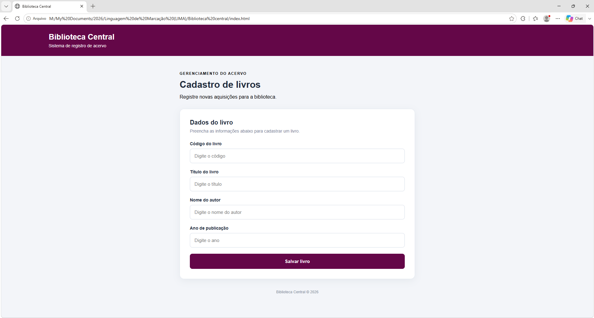
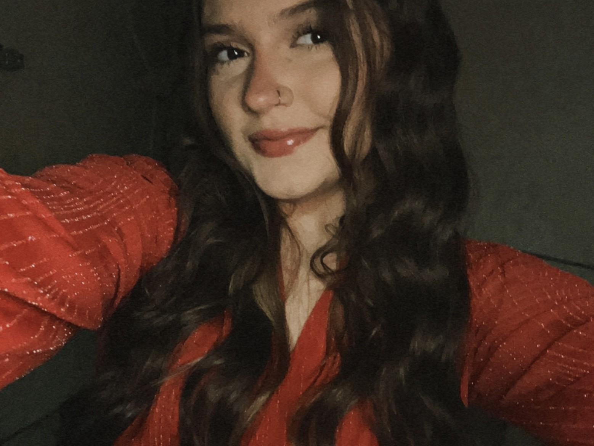
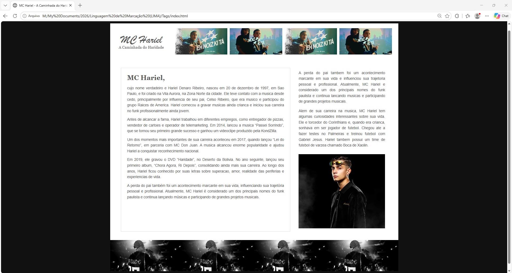
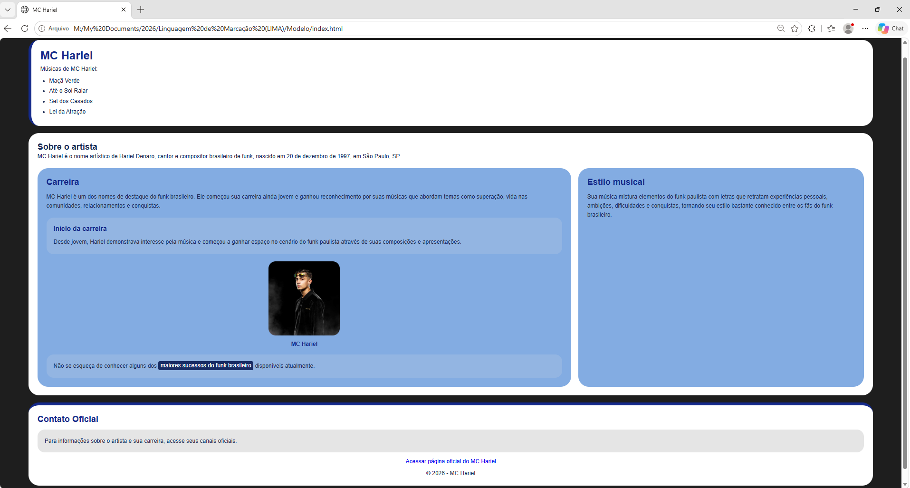

FORMULÁRIO DE CADASTRO
Biblioteca Central
Uma página pra cadastrar livros, com campos de código, título, autor e ano de publicação. O desafio foi deixar o formulário organizado e fácil de preencher.
PORTFÓLIO · 2026
Faço o técnico em Desenvolvimento de Sistemas no SENAI e estou no 2º ano do Ensino Médio no SESI-SP. Juntei aqui o que venho fazendo nas aulas.

Meu nome completo é Júlia Miranda Santos. Estudo no SESI-SP de manhã e faço o curso técnico de Desenvolvimento de Sistemas no SENAI.
Sempre usei bastante tecnologia, e em algum momento usar só não bastou: eu queria entender como as coisas funcionavam por dentro. Ter gente próxima trabalhando na área ajudou, porque vi de perto o que dava pra fazer com isso.
Falo bastante, gosto de inventar coisa e não sossego enquanto não entendo como algo funciona. Programar acabou juntando essas três coisas.
Ainda não sei exatamente o que quero seguir. Pode ser programação, design, marketing, ou um pouco de cada. Por enquanto, o plano é continuar aprendendo e fazendo projetos.
NO CURSO
Foi com eles que fiz este site e os projetos aqui embaixo.
Primeiros programas e muito exercício de lógica.
Criando tabelas e montando consultas pra organizar dados.
Onde eu rascunho layouts e protótipos antes de partir pro código.
Ensino Médio, 2º ano
Técnico em Desenvolvimento de Sistemas
FEITOS EM AULA
Todos esses saíram das aulas do técnico no SENAI. Em cada um tinha alguma coisa que eu ainda não sabia fazer quando comecei.

FORMULÁRIO DE CADASTRO
Uma página pra cadastrar livros, com campos de código, título, autor e ano de publicação. O desafio foi deixar o formulário organizado e fácil de preencher.

SITE INFORMATIVO
Um site sobre o MC Hariel: história, trajetória, curiosidades e fotos. A maior parte do trabalho foi decidir como dividir tanto conteúdo em partes que dessem vontade de ler.

HTML E CSS
Uma segunda versão sobre o mesmo artista, agora focada na carreira, no estilo e nas músicas. Aqui testei outro jeito de montar as seções.
Os próximos projetos vão entrar aqui conforme eu for fazendo.
Muito do que eu gosto acaba indo parar nos projetos. Os dois sites sobre o MC Hariel, por exemplo, vieram direto da minha playlist.
Valeu por passar por aqui! Se quiser falar sobre algum projeto ou só trocar uma ideia, é só me chamar.
ME MANDA UMA MENSAGEM